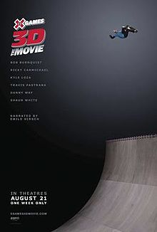

Movie Recommender based on NLP¶
In this notebook I will demonstrate a simple Movie Recommender Engine based on NLP (Natural Language Processing) method. For the purpose of the project I have written a Python based web crawler to download Movie plot and images (movie poster) from Wikipedia. The details of the web crwaler and the complete implementation of the project can be found at:https://goo.gl/NFw3Rx
To run the recommender system or create or enhance your own text based recommender, you have to download the following files from https://goo.gl/Npn71v:
processed_data.csv
The processed_data.csv has the following column names:
* Movie_ID, which uniquely identifies a Movie
* Plot, which has all the movie plot (text) downloaded from Wikipedia
images
The images directory will have the images of Movie posters (which are obtained from Wikipedia).
recommender_setup.py
The recommender_setup.py program has all the necessary code to run the recommender.
NOTE: I scraped movie release posters to render the recommendations in a more aesthetic fashion. However, I could not get all the movie posters, since some of them are not available, and some of them were not easily downloadable by the crawler since the webpage's HTML IDs are not consistent.
The package recommender_setup.py will setup everything to run the recommender. Once you import this package you can use the following function to get the movie recommendations.
Make_Selection(movie_name = "a")
This function will accept a search string as input and display the movies which have the matching text. It prompts you to enter the movie ID, based on which you would like to get the recommendations. For example, to get the recommendations given that the user has liked the movie "Matrix", you can call the function Make_Selection(movie_name = "Matrix"). The function will prompt you to enter the movie ID (since there could be more than one movie with the name "Matrix"). Based on the movie ID selected by the user the recommendations are generated.
Environment¶
You need the following software/packages to to run this project:
- Python 3
- Pandas
- Numpy
- Sklearn
To develop/enhance the project, you need the following additional packages:
- BeautifulSoup
- urllib
Running the Recommender¶
The Python program "recommender_setup.py" has all the necessary statements to execute the system. But note that the program is customized to work in Jupyter notebook. You have to make minor changes to run the code in any other environment.
#Import the preprocessed recommender
import recommender_setup as rs
rs.Make_Selection(movie_name = "matrix")
![](./images/795.jpg "matrix reloaded 2003 american-australian science fiction action film first sequel matrix second installment matrix trilogy written directed wachowski brothers premiered may 2003 westwood los angeles california went general release warner bros north american theaters may 15 2003 around world latter half month also screened competition 2003 cannes film festival video game enter matrix released may 15 collection nine animated shorts animatrix released june supported expanded storyline film matrix revolutions completes story released six months reloaded november 2003 six months events first film neo keanu reeves trinity carrie-anne moss romantically involved morpheus laurence fishburne receives message captain niobe jada pinkett smith logos calling emergency meeting zion ships zion confirmed last transmission osiris army sentinels tunneling towards zion reach within 72 hours commander lock harry lennix orders ships return zion prepare onslaught morpheus asks one ship remain order contact oracle gloria foster caduceus receives message oracle nebuchadnezzar ventures neo contact one caduceus crew bane ian bliss encounters agent smith hugo weaving takes bane avatar smith uses avatar leave matrix gaining control bane real body in zion morpheus announces news advancing machines people neo receives message oracle returns matrix meet bodyguard seraph collin chou leads realizing oracle part matrix neo asks trust replies decision oracle instructs neo reach source matrix finding keymaker randall duk kim prisoner merovingian lambert wilson oracle departs smith appears telling neo defeated refused deleted rogue program demonstrates ability clone using inhabitants matrix including agents hosts tries absorb neo host fails prompting battle smith clones neo neo manages defend forced retreat increasingly overwhelming numbers neo morpheus trinity visit merovingian ask keymaker merovingian refuses wife persephone monica bellucci seeking revenge husband infidelity betrays leads trio keymaker merovingian soon arrives men morpheus trinity keymaker escape neo holds merovingian servants morpheus trinity try escape keymaker freeway facing several agents twins merovingian chief henchmen morpheus defeats twins trinity escapes neo flies save morpheus keymaker agent johnson real world zion remaining ships prepare battle machines within matrix crews nebuchadnezzar vigilant logos help keymaker neo reach door source the crew logos must destroy power plant prevent security system triggered crew vigilant must destroy back-up power station logos succeeds vigilant bombed sentinel real world killing everyone board although neo asked trinity remain nebuchadnezzar enters matrix replace vigilant crew complete mission however escape compromised agent fight neo morpheus keymaker try reach source smiths appear try kill keymaker unlocks door source allowing neo morpheus enter escape smiths smiths kill keymaker tries close door source neo enters door meets program called architect matrix creator the architect explains neo part design sixth iteration matrix designed stop fatal system crash naturally occurs due concept human choice five previous ones neo choose either return source unique code reboot matrix pick survivors begin repopulate soon-to-be-destroyed zion cause matrix crash kill everyone connected combined zion destruction would mean mankind extinction neo learns trinity situation chooses save instead falls building flies catches phasing hand body removes bullet body restarts heart back real world sentinels destroy nebuchadnezzar neo displays new ability disable machines thoughts falls coma effort crew picked another ship hammer captain roland reveals ships wiped machines someone activated emp early found one survivor afterwards—revealed smith-possessed bane") |
![](./images/796.jpg "matrix revolutions 2003 american–australian science fiction action film written directed wachowski brothers third installment matrix trilogy released six months following matrix reloaded film released simultaneously 60 countries november 2003 final film series matrix storyline continued matrix online second live-action film released regular imax theaters time neo bane lie unconscious medical bay ship hammer meanwhile neo finds digital self trapped virtual subway station—named mobil ave mobil anagram limbo —a transition zone matrix machine city subway station meets family programs including girl named sati whose father tells neo subway controlled trainman exiled program loyal merovingian neo tries board train family trainman refuses overpowers him seraph contacts morpheus trinity behalf oracle informs neo confinement seraph morpheus trinity enter club hel confront merovingian force release neo troubled visions machine city neo visits oracle reveals smith intends destroy matrix real world states everything beginning end war conclude neo leaves large group smiths assimilates sati seraph unresisting oracle gaining powers precognition in real world crew nebuchadnezzar hammer find reactivate niobe ship logos interrogate bane says recollection earlier massacre captains plan defense zion neo requests ship travel machine city motivated encounter oracle niobe offers logos neo departs accompanied trinity bane stowed away logos takes trinity hostage neo realizes bane assimilated smith bane cauterizes neo eyes power cable blinding however neo discovers ability perceive world golden light neo kills bane trinity pilots machine city niobe morpheus set zion hammer aid human defenses sentinels zion fatally wounded captain mifune instructs kid open gate hammer arrives discharges emp disabling sentinels also remaining defenses humans forced retreat wait next attack thinking last stand near machine city neo trinity greeted thousands missiles neo attempts destroy overwhelmed numbers logos attacked sentinels forcing fly missiles seconds breach cloud layer see earth real sky trinity whispers word beautiful upon descent lose control causing crash logos machine city crash kills trinity neo enters machine city encounters deus ex machina machine leader neo warning smith plans conquer matrix real world offers stop smith exchange peace zion machine leader agrees sentinels stop attacking zion the machines provide connection neo enter matrix inside neo finds smith assimilated inhabitants smith oracle powers steps forth saying foreseen victory neo protracted battle neo—finding unable defeat smith—allows assimilated machine leader sends surge energy neo body real world neo connected source energy surge causes neo-smith clone smith clones matrix destroyed though neo dies process sentinels withdraw zion morpheus niobe embrace neo body carried away machines matrix reboots architect encounters oracle park agree peace last long humans offered opportunity leave matrix oracle tells sati thinks see neo seraph asks oracle knew would happen replies know believed") | ![](./images/2471.jpg "transformers revenge fallen 2009 american science fiction action film directed michael bay executive produced steven spielberg based toy line name created hasbro sequel 2007 transformers well second installment live-action transformers film series taking place two years predecessor plot revolves around sam witwicky caught war two factions alien robots autobots led optimus prime decepticons led megatron sam strange visions cybertronian symbols hunted decepticons orders ancient decepticon named fallen seeks get revenge earth finding activating machine would provide decepticons energon source destroying sun life earth process returning transformers include optimus prime bumblebee ironhide ratchet megatron starscream scorponok +++++this section may require copy editing grammar style cohesion tone spelling assist editing april 2017 learn remove template message ++in 17 000 c seven primes travel galaxy create energon star-absorbing machines named sun harvesters primes followed rule never destroy planets life however one megatronus prime later known fallen defies establishes sun harvester earth confronted primes imprison harvest planet sun matrix leadership primes sacrifice hide matrix unknown location two years megatron defeat autobots join s military form non-biological extraterrestrial species treaty nest purpose hunt surviving decepticons mission shanghai autobots intercept two decepticons demolisher sideways send new recruits sideswipe skids mudflap arcee chromia elita one hunt sideswipe successfully kills sideways demolisher ambushed optimus prime tells prime fallen return optimus kills reveal information national security adviser theodore galloway scolds task force sarcastically tactics reminding megatron corpse still resting bottom laurentian abyss last known allspark shard locked nest headquarters simultaneously soundwave hacks s military satellite overhears information sends ravage retrieve shard meanwhile sam witwicky preparing attend college leaving girlfriend mikaela banes guardian bumblebee behind discovers smaller allspark shard jacket picks causing see cybertronian symbols sam gives shard mikaela later captures decepticon wheelie attempts steal constructicons resurrect megatron brutally ripping apart constructicon scrapmetal provide parts megatron travels moon saturn reunites master fallen orders capture sam alive kill optimus transformer defeat fallen sam mikaela college roommate leo captured decepticon grindor brought abandoned factory megatron reveals symbols sam mind lead decepticons new energon source optimus bumblebee arrive rescue trio optimus engages megatron starscream grindor though optimus injures starscream cutting arm killing grindor megatron ambushes optimus kills impaling chest destroying spark megatron kills optimus says re weak autobots arrive repel decepticons forcing megatron starscream retreat afterwards decepticons launch international assault many areas around world simultaneously fallen hijacks earth telecommunications systems demanding sam turned him sam mikaela leo enlist help former sector agent seymour simmons reveals transformers visited earth eons ago ancient known seekers live secret help wheelie track decepticon seeker named jetfire use allspark shard revive jetfire afterwards teleports group egypt orders locate matrix leadership revive optimus wheelie turn decepticons sam group finds matrix located petra disintegrates dust sam hands undeterred sam stuffs matrix remains sock meanwhile nest forces autobots land near giza pyramid complex attacked large force decepticons battle constructicons combine form devastator destroys one pyramids revealing sun harvester inside killed railgun called simmons lennox epps call airstrike kills large portion decepticon ground forces however megatron manages shoot sam seemingly killing nearing death primes contact sam vision telling matrix found earned earned right bear restore sam life matrix used revive optimus the fallen teleports location steals matrix optimus returns pyramid megatron activates sun harvester wounded jetfire sacrifices order optimus gain parts give immense strength ability fly optimus knocks fallen megatron pyramid destroying sun harvester process battle optimus injures disables megatron optimus kills fallen vowing vengeance megatron retreats starscream victorious autobots allies return united states saved world") | ![](./images/3006.jpg "dark knight rises 2012 superhero film directed christopher nolan co-wrote screenplay brother jonathan nolan story david goyer featuring dc comics character batman film final installment nolan batman film trilogy sequel batman begins 2005 dark knight 2008 christian bale reprises lead role bruce wayne/batman returning cast allies michael caine alfred pennyworth gary oldman james gordon morgan freeman lucius fox film introduces selina kyle anne hathaway bane tom hardy eight years events dark knight merciless revolutionary bane forces older bruce wayne resume role batman save gotham city nuclear destruction eight years death district attorney harvey dent dent act grants gotham city police department powers nearly eradicate organized crime police commissioner james gordon feels guilty covering dent crimes turned murderer joker writes resignation speech confessing truth decides using it bruce wayne become recluse broken death childhood sweetheart rachel dawes retired vigilante batman taking blame dent crimes death cat burglar selina kyle obtains wayne fingerprints home kidnaps congressman byron gilley sells fingerprints phillip stryver assistant wayne business rival john daggett requests clean slate wipe traces person internet payment stryver double-crosses kyle uses gilley phone alert police location gordon police arrive find congressman pursue stryver men sewers selina flees police attempt follow sewers men enter killed gordon captured rest police assailed sniper fire the assailants drag gordon bane masked terrorist set base operation sewers bane searched finds resignation speech gordon escapes found john blake patrol officer gordon promotes blake detective blake reporting directly bane multiple accomplices attack gotham stock exchange using bruce fingerprints transaction leaves wayne bankrupt wayne butler alfred pennyworth reveals rachel intended marry dent died alfred resigns attempt convince bruce move batman wayne enterprises losing profits wayne discontinued fusion reactor project learned core could weaponized fearing daggett bane employer would gain access reactor wayne asks board member miranda tate take company kyle agrees take batman bane instead leads bane trap bane reveals intends fulfill ra al ghul mission destroy gotham league shadows remnant stealing lucius fox gadgets engages batman delivers crippling blow back taking heavily fortified prison inmates tell wayne story ra al ghul child born prison cared fellow prisoner escaping—the prisoner ever done wayne assumes bane child bane lures gotham police underground traps kills mayor anthony garcia forces dr leonid pavel russian nuclear physicist kidnapped uzbekistan convert reactor core nuclear bomb bane uses bomb hold city hostage isolate gotham world using gordon stolen speech bane reveals cover-up dent crimes public releases prisoners blackgate penitentiary initiating anarchy wealthy powerful property expropriated dragged homes given show trials presided jonathan crane sentenced death after spending months recovering re-training wayne escapes prison enlists kyle blake tate gordon fox help stop bomb detonation hands batpod kyle tasking helping people evacuate saving asks come along leaving gotham fate refuses freeing trapped police clash bane army midst batman overpowers bane interrogates bane bomb trigger tate intervenes stabs batman reveals talia al ghul ra al ghul daughter bane protector aided escape prison uses detonator gordon successfully approached bomb blocked signal preventing remote detonation talia leaves find bomb bane prepares kill batman kyle returns batpod saves batman killing bane batman kyle pursue talia hoping bring bomb back reactor chamber stabilized talia truck crashes remotely floods destroys reactor chamber dying way stop detonation batman uses bat haul bomb bay detonates destroying bat in aftermath batman presumed dead honored hero wayne presumed killed riots wayne manor becomes orphanage remaining estate left alfred fox discovers wayne fixed bat autopilot gordon finds bat-signal refurbished visiting florence alfred discovers wayne alive well relationship selina kyle blake resigns police force accordance wayne inherits batcave") | ![](./images/2592.jpg "kaboom 2010 american science fiction mystery fantasy comedy film written directed gregg araki starring thomas dekker juno temple haley bennett james duval smith 18-year-old film student identifies sexually undeclared strange dreams going college best friend stella known since junior high smith finds note saying chosen son roommate thor lusts regretting thor straight stella goes party smith hooks another girl lorelei recognizes lorelei one people dream smith notices guy distracted red-haired girl dream vomits shoe guy vanishes smith gets picked london british student sex smith regret want except sex smith visits nude beach meets man named hunter start sex smith disappointed hear hunter married stella discovers lorelei unstable also witch rejection issues stella keeps trying dump difficulty witch begins make attempts life smith walks thor thor best friend rex wrestling underwear london seduces rex convincing three-way smith smith nineteenth birthday during time smith continues dreaming red-haired girl dreams pursued people wearing animal masks smith finds girl killed head cut later meets madeline appears red-haired girl tells twin sister named rebecca kidnapped many years ago men wearing animal masks stella attacked washroom saves spraying water witch causing burn up the animal-masked people finally capture smith london smith mom bundled van driven meet head secret cult smith learns cult leader father although always told father died smith young stella oliver perpetually stoned messiah pursue van oliver powers like lorelei uses good turns oliver meeting smith flirting chance trying protect smith messiah acting stoned also wishes protect smith animal-masked people turn thor rex hunter whose mission get london smith secret underground shelter survive explosion dozens nuclear bombs non-cult members annihilated cult take world smith leader the messiah tries running van road vehicles accelerate towards bridge smith father presses button earth explodes") |
| Similarity:0.711975340685 | Similarity:0.0977197774246 | Similarity:0.0703271071526 | Similarity:0.0681079448531 |
rs.Make_Selection(movie_name = "hunger games")
![](./images/3077.jpg "hunger games 2012 american dystopian science fiction adventure film directed gary ross based novel name suzanne collins first installment hunger games film series produced nina jacobson jon kilik screenplay ross collins billy ray film stars jennifer lawrence josh hutcherson liam hemsworth woody harrelson elizabeth banks lenny kravitz stanley tucci donald sutherland story takes place dystopian post-apocalyptic future nation panem divided 12 districts boy girl district ages 12 18 must take part hunger games televised annual event tributes district required fight death one survivor katniss everdeen jennifer lawrence volunteers take younger sister place joined district male tribute peeta mellark josh hutcherson katniss travels capitol train hunger games guidance former victor haymitch abernathy woody harrelson ++++++as punishment past rebellion 12 districts nation panem forced victorious capitol annually select two tributes one boy one girl ages 12 18 fight death hunger games district 12 katniss everdeen volunteers younger sister primrose chosen lot male tribute peeta mellark escorted capitol chaperone effie trinket mentor haymitch abernathy past district 12 victor alcoholic haymitch impresses importance gaining sponsors provide gifts food supplies games televised interview peeta publicly expresses love katniss initially takes attempt earn sponsors though later learns means training katniss observes careers marvel glimmer cato clove tributes districts 2 trained games early age at start games katniss ignores haymitch advice grabs supplies ground around cornucopia structure filled food weapons supplies contestants start narrowly escapes killed clove though clove inadvertently saves life killing district boy first half tributes die initial melee 11 including careers remain first day katniss tries stay far away competitors head gamemaker seneca crane triggers forest fire drive back towards runs careers peeta seemingly allied flees tree careers unable reach peeta advises wait come down the next morning careers peeta sleep katniss notices rue district 11 young female tribute hiding adjacent tree rue silently draws attention nest poisonous tracker jackers genetically modified wasps whose venom cause hallucinations death using knife cuts branch holding nest causing fall careers peeta marvel cato clove escape glimmer succumbs venom katniss stung becoming disoriented hallucinating peeta returns tells run away after rue helps katniss recover poison become friends allies katniss devises plan destroy cache supplies careers hoarding katniss succeeds cato angrily kills boy district assigned guard hoard katniss finds rue caught trap frees marvel appears throws spear katniss strikes rue abdomen fatally wounding katniss shoots marvel chest bow comforts rue song dies places flowers around body holds three fingers district 12 salute way honor rue people district 11 salute katniss riot prompting president snow warn crane games turning well haymitch persuades crane change rules allow two winners district suggesting quiet unrest change announced katniss searches peeta finding gravely wounded fleeing careers moves safety hear announcement survivor needs provided cornucopia next morning despite peeta strong opposition katniss leaves get medicine ambushed cornucopia clove pins ground brags rue death katniss saved thresh district 11 male tribute kills clove spares katniss - helping rue medicine heals peeta quickly while hunting food katniss hears cannon go signalling death runs find peeta horrified find collected lethal nightlock berries ignorance peeta fine discover foxface district female tribute died eating berries assumed watching peeta edible then crane wild beasts unleashed arena kill thresh chase katniss peeta onto roof cornucopia ambushed cato fight stalemate katniss aims arrow cato peeta headlock boasting katniss shoots peeta fall deaths peeta gets katniss shoot cato hand peeta throws cato beasts maul kill katniss shoots cato ending suffering katniss peeta think rule change revoked one victor peeta urges katniss shoot convinces eat nightlock berries hastily named co-winners 74th hunger games afterward haymitch warns katniss made many enemies acts defiance snow crane locked room nightlock katniss peeta return district 12 snow ponders situation katniss encourages peeta forget happened games devastating") |
![](./images/3361.jpg "hunger games catching fire 2013 american dystopian science fiction adventure film based suzanne collins dystopian novel catching fire 2009 second installment hunger games trilogy film sequel hunger games 2012 second installment hunger games film series produced nina jacobson jon kilik distributed lionsgate francis lawrence directed film screenplay simon beaufoy michael arndt adding existing cast supporting cast filled philip seymour hoffman jeffrey wright jena malone sam claflin lynn cohen amanda plummer alan ritchson meta golding filming began september 10 2012 atlanta georgia moving hawaii plot catching fire takes place months previous installment katniss everdeen fellow district 12 tribute peeta mellark returned home safely winning 74th annual hunger games throughout story katniss senses rebellion oppressive capitol simmering throughout districts after winning 74th hunger games katniss everdeen peeta mellark return home district 12 president snow visits katniss snow explains actions games inspired rebellions orders use upcoming victory tour convince people actions love peeta defiance capitol otherwise katniss loved ones whole district destroyed like district 13 as tour begins haymitch abernathy warns katniss peeta show relationship must continue rest lives katniss suggests announce engagement approved snow wedding staged mansion capitol katniss warns gale hawthorne snow threat kill families peacekeepers crack district 12 gale publicly whipped attacking new head peacekeeper romulus thread snow announces third quarter quell upcoming hunger games involve tributes selected previous victors katniss immediately devotes ensuring peeta survival makes haymitch promise help reaping effie trinket draws katniss haymitch names peeta immediately volunteers take haymitch place haymitch reveals tributes angry returned games pre-games interview katniss wears wedding dress ordered snow stylist cinna rigs transform representation mockingjay peeta announces on-air katniss secretly married expecting baby audience capitol citizens shouts games stopped avail katniss enters arena cinna severely beaten dragged away peacekeepers katniss watches helplessly in games katniss allies finnick odair elderly mags mentor arena force field shocks peeta stopping heart finnick revives group flees poisonous fog finnick carrying mags peeta go mags sacrifices finnick help mandrills attack peeta saved unexpected sacrifice hiding tribute group escapes beach around central lake finnick greets district wiress beetee district johanna mason wiress discovers arena designed like clock predictable unchanging hazards hour team waits next hazard wiress stabbed death gloss alongside sister cashmere brutus enobaria comprise careers katniss shoots gloss dead bow johanna kills cashmere finnick stabbed leg enobaria beetee suggests luring careers wet beach electrocuting running wire lake tree struck lightning every 12 hours group separates prepare trap alone johanna suddenly hits katniss head stunning cuts tracker arm katniss returns tree finds unconscious beetee unable find peeta katniss almost kills finnick reminds remember real enemy haymitch advised katniss attaches wire arrow shoots arena roof lightning hits lightning strike knocks unconscious causes power failure brings part dome cuts capitol surveillance katniss awakens hovercraft haymitch beetee finnick plutarch heavensbee head gamemaker revealed rebel snow tells bound district 13 headquarters rebellion half tributes recruited help katniss escape symbol growing rebellion unable rescue peeta johanna katniss sedated attacking haymitch keeping promise later awakens find gale side assures family safe district 12 destroyed") | ![](./images/3760.jpg "hunger games mockingjay part 2014 american dystopian science fiction adventure film directed francis lawrence screenplay peter craig danny strong first two films based suzanne collins novel mockingjay final book hunger games trilogy third installment hunger games film series produced nina jacobson jon kilik distributed lionsgate film features ensemble cast includes jennifer lawrence josh hutcherson liam hemsworth woody harrelson elizabeth banks julianne moore philip seymour hoffman jeffrey wright stanley tucci donald sutherland principal photography parts film began september 23 2013 atlanta moving paris two weeks filming officially concluding june 20 2014 berlin rescued destroyed arena 75th hunger games katniss everdeen along fellow tributes beetee finnick odair taken district 13 underground district isolated panem spearheading rebellion reunited mother sister prim recuperating introduced president alma coin rebel leader told immediately force field destroyed arrow riots erupted half districts panem joined 13 rebel cause though also caused snow firebomb district 12 retaliation coin asks become mockingjay —the symbol rebellion—as part hearts minds strategy katniss declines seeing peeta manipulated capitol state television quell rebellion katniss reluctantly agrees become coin mockingjay condition peeta captured victors rescued pardoned earliest opportunity coin refuses telling katniss victors arrested face severe punishment katniss angrily demands pardoned plutarch heavensbee head gamemaker rescued katniss arena convinces coin meet katniss demands after haymitch notes katniss thrives spontaneity meets film team led capitol escapee cressida dressed specially-designed outfit given effie trinket stylist close friend gale bodyguard go district visit hospital visit concludes capitol bombing squadron arrives bombs hospital killing everyone inside reaction katniss gale shoot two capitol hovercrafts killing everyone board rage katniss gives rousing speech camera broadcast beetee hijacks capitol news feed broadcast strikers district kill entire team peacekeepers hidden land mines climbing trees safety after seeing weakened peeta tv propo propaganda shots team return district 12 gale reports district 12 destruction katniss filmed singing hanging tree soon hundreds protesters district singing anthem launch suicidal human wave attack hydroelectric dam capitol primary source electricity attack destroys dam causes power cut capitol forcing capitol revert backup power generators weakening ability broadcast propaganda that night katniss watches peeta interviewed caesar flickerman games former presenter coin beetee hijack signal air clip katniss seeing peeta shouts warning capitol attack district 13 capitol officials immediately cut broadcast coin orders mass evacuation deep underground shelters facility survives attack unharmed upon emerging katniss discovers area littered white roses realizes president snow sent taunt presumes whenever speaks capitol torture peeta warning gave district additional eight minutes evacuation time coin dispatches elite special forces team includes gale boggs rescue along johanna mason enobaria annie cresta remaining victors prison capitol tribute center beetee hijacks capitol defense system fill frequencies propo narrated finnick explains forced sell capitol snow threat loved ones tortured executed live conversation snow informs katniss awareness rescue cutting broadcast terrified katniss pleads plutarch tell gale team flee tells capitol disabled transmission gale team ends escaping capitol unharmed indicating capitol reduced security purpose katniss goes greet bruised beaten peeta caused capitol torturing immediately last interview caesar unexpectedly attacks strangles unconsciousness knocked boggs katniss wakes medical facility informed peeta hijacked —a form physical mental torture brainwashed wanting kill katniss associating memories psychological terror created tracker jacker venom explains capitol allowed boggs team escape unharmed peeta restrained bed placed solitary confinement serum developed reverse hijacking effects meanwhile coin announces victors rescued next objective capitol principal military stronghold ravines district 2—the remaining district still loyal capitol katniss looks peeta thrashes attempting escape bindings") | ![](./images/3518.jpg "starving games 2013 american parody film based hunger games directed jason friedberg aaron seltzer film stars maiara walsh cody christian brant daugherty lauren bowles diedrich bader first film friedberg seltzer long-running partnership distributed independently released simultaneously theaters video demand distribution start-up ketchup entertainment kantmiss evershot practices archery forest boyfriend dale surprises arrow accidentally hits wizard oz return district 12 children afraid getting picked games injure mutilate avoid selection gathering 75th annual starving games president snowballs explains reason separating america districts well ridiculous prizes winning drawing district 12 contestants petunia kantmiss sister tricks kantmiss volunteering gets picked crying fake tears dale tries volunteering well town idiot peter malarkey beats it when games begin kantmiss grabs backpack tries fleeing seleca games producer sends angry birds attack defeats squashes annoying orange peter teams group contestants led marco aim kill kantmiss marco tries kill spear kills one allies instead flee knocks beehive using chainsaw kantmiss stung venom causes hallucinate na vi slapped back senses fellow contestant rudy team vowing kill contestants first halftime show played marco tries kill kantmiss rudy kicks shin marco kills rudy wanting spice games snowballs decides implement lesbian love story learns kantmiss woman left thus straight romance possible announced couple win games kantmiss tries team marco peter seleca fakes killed convince find peter instead kantmiss kills contestants marco flees peter cave peter starts fever reveals stalking kantmiss life since kantmiss keeping distance peter seleca offers send medical supplies treat peter gets intimate kantmiss sex peter televised dale disgusted storms starving games arena expressing hatred peter the next day kantmiss peter attack marco snowballs orders seleca send expendables armed dale arrives kills asks kantmiss come back kantmiss orders leave breaks marco holds peter hostage kantmiss shoots loaf bread eye killing seleca announces one winner peter tries convincing kantmiss commit suicide ingesting poisonous berries give charge satisfaction fighting death instead kantmiss kills peter arrow telling nothing personal afterwards nick fury avengers show fury saying wants kantmiss join avengers team replacement hawkeye avengers die stepping platforms onto mines") |  |  |
| Similarity:0.756288369602 | Similarity:0.626990711657 | Similarity:0.0599779801182 | Similarity:0.0502080355009 | Similarity:0.0455761376112 |
rs.Make_Selection(movie_name = "batman")
![](./images/1126.jpg "batman begins 2005 british-american superhero film based dc comics character batman co-written directed christopher nolan starring christian bale michael caine liam neeson katie holmes gary oldman cillian murphy tom wilkinson rutger hauer ken watanabe morgan freeman film reboots batman film series telling origin story title character batman alter ego bruce wayne initial fear bats death parents journey become batman fight stop ra al ghul neeson scarecrow murphy plunging gotham city chaos comic book storylines man falls batman year one batman long halloween served inspiration the film presented nonlinear narrative jumping present past linear summary plot as child bruce wayne falls dry well attacked swarm bats subsequently developing phobia creatures watching opera parents thomas martha bruce becomes frightened performers masquerading bats asks leave outside mugger joe chill murders bruce parents front orphaned bruce raised family butler alfred pennyworth fourteen years later chill freed exchange testifying gotham city mafia boss carmine falcone bruce intends murder chill one falcone assassins first bruce childhood friend assistant district attorney rachel dawes berates attempting undermine justice system saying father would ashamed bruce confronts falcone tells real power comes feared bruce decides travel world learn confront injustice serving prison sentence theft bhutan meets henri ducard trains member league shadows led ra al ghul completing training purging fears bruce learns league intends destroy gotham believing corrupt beyond saving bruce rejects league cause burns temple escape ra killed falling debris bruce saves unconscious ducard bruce returns gotham intent fighting crime inspired childhood fear takes vigilante identity batman sets base caves beneath wayne manor takes interest family company wayne enterprises run unscrupulous william earle company archivist lucius fox allows bruce access prototype defense technologies including protective bodysuit heavily armored car called tumbler bruce poses shallow playboy allay suspicion batman intercepts drug shipment provides rachel evidence falcone enlists sergeant james gordon one honest cops left gotham arrest prison falcone meets dr jonathan crane corrupt psychiatrist helped smuggle drugs gotham threatens reveal complicity declare mentally unfit trial crane puts scarecrow mask sprays falcone fear-inducing hallucinogen drives insane transferred arkham asylum investigating scarecrow batman exposed hallucinogen left incapacitated saved alfred given antidote developed fox rachel accuses crane corruption crane reveals pouring fear-inducing drug gotham water supply drugs rachel batman saves subdues crane claims work ra al ghul batman evades police get rachel safety administers antidote gives vial gordon another mass production ducard reappears bruce birthday party reveals actual ra al ghul stolen powerful microwave emitter wayne enterprises plans vaporize gotham water supply rendering crane drug airborne causing mass hysteria destroy city sets wayne manor fire leaves bruce dead alfred rescues him ra loads microwave emitter onto gotham monorail system releasing drug train travels toward city central water source batman rescues rachel drugged mob indirectly reveals identity pursues ra onto monorail fights gordon uses tumbler cannons destroy section track batman refuses kill ra also chooses save gliding train leaving ra aboard crashes explodes bruce gains rachel respect loses love decides batman bruce buys controlling stake publicly traded wayne enterprises fires earle replaces fox gordon promoted lieutenant gotham city police department shows batman bat-signal mentions criminal leaves joker playing cards crime scenes batman promises investigate disappears night") |
| ![](./images/2943.jpg "batman dark knight returns two-part direct-to-video animated superhero film adaptation 1986 comic book dark knight returns frank miller directed jay oliva worked storyboard artist man steel red hood year one batman superman dawn justice several batman veterans also involved film feigning remorse past joker convinces wolper take talk show tell story makes plans escape old henchman supplies mind-controlling lipstick meanwhile superman works government operative exchange allowed covertly help people asked president ronald reagan end batman vigilante activities framing events growing hostility usa soviet union possession island corto maltese batman continued presence humiliates national authorities yindel becomes commissioner orders batman arrest superman warns batman government tolerate much longer joker makes talk show appearance david endochrine show batman fights gcpd studio roof fight joker kills wolper gasses everyone studio death escapes finds selina kyle uses one escorts lipstick take control congressional representative calls nuclear strike soviets falling death batman investigation leads selina finds bound dressed like wonder woman kelley notices cotton candy floor batman deduces joker fairgrounds kelley accidentally kills joker henchman batman pursues joker indiscriminately guns dozens people batman corners wounded partially blinded joker admits feeling responsible every murder joker committed intends stop permanently ensuing fight joker stabs batman repeatedly batman breaks joker neck front witnesses content made batman lose control branded murderer joker finishes twisting neck killing gcpd arrive batman bleeding profusely fights way kelley escapes superman deflects soviet nuclear missile hit blast badly injured detonation creates electromagnetic pulse wipes electrical equipment united states causes nuclear winter city descends chaos batman kelley gordon rally sons batman citizens gotham restore order yindel accepts batman become powerful take rest powerless s overrun crime gotham becomes safest city america embarrassing president administration prompting send superman finally stop batman batman superman agree meet crime alley wearing powerful exoframe supported kelley former superhero oliver queen green arrow batman fights superman using various tactics make fight even superman gains advantage queen hits arrow made synthetic kryptonite severely weakening batman defeats superman claims intentionally made kryptonite weak defeat superman without killing batman apparently dies heart attack wayne manor self-destructs alfred dies stroke aftermath world learns bruce batman secrets destroyed manor finances disappear superman leaves wayne funeral gives kelley knowing wink hearing faint heartbeat coming bruce coffin underground caves bruce revealed faked death makes preparations continue mission discreetly allied kelley queen followers") | ![](./images/2095.jpg "dark knight 2008 superhero film directed co-produced co-written christopher nolan featuring dc comics character batman film second part nolan dark knight trilogy sequel 2005 batman begins starring ensemble cast including christian bale michael caine heath ledger gary oldman aaron eckhart maggie gyllenhaal morgan freeman film bruce wayne/batman bale james gordon oldman harvey dent eckhart form alliance dismantle organized crime gotham city menaced criminal mastermind known joker ledger seeks undermine batman influence create chaos gang criminals rob gotham city mob bank double-crossing murdering one left joker escapes money batman district attorney harvey dent lieutenant jim gordon form alliance rid gotham organized crime bruce wayne impressed dent idealism offers support career believes dent gotham protector give batman lead normal life rachel dawes—even though dent dating mob bosses sal maroni gambol chechen hold videoconference corrupt accountant lau taken funds fled hong kong joker interrupts warns batman unhindered law offers kill exchange half money gambol puts bounty joker instead insults escaping smuggling corpse joker kills gambol takes gang mob ultimately decides take joker offer dent arrests entire mob batman finds lau hong kong brings back gotham testify joker threatens keep killing people unless batman reveals identity starts murdering police commissioner gillian loeb judge presiding mob trial joker also tries kill mayor anthony garcia gordon sacrifices stop assassination dent learns rachel next target bruce decides reveal secret identity however dent announces batman dent taken protective custody joker appears attacks convoy batman comes dent rescue gordon faked death arrests joker promoted commissioner rachel dent escorted away michael wuertz anna ramirez detectives maroni payroll batman interrogates joker reveals rachel dent trapped separate locations rigged explosives batman races save rachel gordon goes save dent batman arrives building realizing joker sent dent location instead buildings explode killing rachel disfiguring half dent face joker escapes jail lau coleman reese accountant wayne enterprises deduces bruce batman tries go public information observing unpredictability joker maroni informs joker location commissioner gordon joker sets fire mob money burning lau alive process kills chechen wanting reese revelation interfere plans joker threatens destroy hospital unless someone kills reese gordon orders evacuation hospitals gotham goes secure reese joker finds dent gotham general manipulates seeking revenge rachel death joker destroys hospital escapes busload hostages dent goes killing spree based coin flip targets people holds responsible rachel death including wuertz killed ramirez spared maroni car dent shoots driver presumably killing maroni well after announcing gotham subject rule come nightfall joker rigs two evacuating ferries explosives one containing civilians containing prisoners says blow midnight let one live passengers either boat blows batman finds joker sonar device spies entire city reluctant help lucius fox civilians prisoners refuse kill batman apprehends joker fight police arrive take joker custody gloats gotham citizens lose hope dent rampage becomes public knowledge gordon arrives building rachel died dent judges fate along batman flipping coin spares shoots batman tries kill gordon son batman wearing body armor tackles dent building death batman persuades gordon preserve dent heroic image holding batman responsible killing spree police launch manhunt batman gordon destroys bat-signal fox watches sonar device self-destructs alfred pennyworth burns letter rachel choice marry dent") | ![](./images/694.jpg "bruce almighty 2003 american high-concept comedy film directed tom shadyac written steve koren mark keefe steve oedekerk stars jim carrey bruce nolan down-on-his-luck tv reporter complains god morgan freeman job correctly offered chance try god one week bruce nolan jim carrey television field reporter eyewitness news wkbw-tv buffalo new york desires news anchorman relationship girlfriend grace connelly jennifer aniston also mild crush co-worker susan ortega catherine bell barely seems notice bruce however suffers constant bad luck reaches breaking point passed promotion rival evan baxter steve carell steals dialogue bruce segment accepting promotion air furious bruce aggressively profanely criticizes station first live report promptly fired following series misfortunes bruce takes frustration god morgan freeman blaming claiming one fired bruce later receives message pager directing empty warehouse meets god god offers give bruce powers prove job correctly god gives bruce two rules must follow first bruce tell anyone else god powers second bruce use powers interfere free bruce ignores god initially jubilant powers using personal gain potty training dog getting revenge street gang assaulted earlier exposing woman underwear blowing dress transforming beat car saleen s7 sexually impressing grace bruce also finds ways using powers cause miraculous events occur otherwise mundane events covers discovering jimmy hoffa body causing meteor harmlessly land near cook-off earning job back bruce uses powers cause evan humiliate air causing evan fired favor bruce new anchor after taking grace fancy dinner telling made anchor angering thought going propose bruce begins hear voices head re-encounters god confronts bruce selfish use powers explains voices prayers god bruce must deal bruce creates computerized system receive prayers respond finds influx far great handle even though god stated receiving prayers buffalo area sets program automatically answer yes every prayer during party celebrate bruce promotion susan seduces kisses grace arrives sees storms bruce follows heartbroken listen tries use powers convince grace stay influence free bruce looks around realizes automatically granting everyone prayers plunged city chaos bruce returns god explains despite chaotic things seem always way make things right bruce must figure way solve bruce begins solve problems life practically helping man whose car broken training dog normally allowing evan job back bruce returns computer system briefly unplugged goes answering prayers manually best reads finds prayer grace wishing bruce success well reads another prayer grace arrives one wishing love bruce anymore despondent bruce walks alone highway asking god take back powers letting fate hands bruce suddenly struck truck regains consciousness white void god appears asks bruce really wants bruce admits wants make sure grace finds man would make happy god agrees bruce finds hospital shortly miraculously revived doctors grace arrives two rekindle relationship later becoming engaged recovery bruce returns field reporting takes pleasure simple stories bruce grace announce engagement live television film ends doomsayer bruce previously ran various occasions finally revealing god") | ![](./images/3946.jpg "batman superman dawn justice 2016 american superhero film featuring dc comics characters batman superman directed zack snyder distributed warner bros pictures film second installment dc extended universe following 2013 man steel written chris terrio david goyer features ensemble cast includes ben affleck henry cavill amy adams jesse eisenberg diane lane laurence fishburne jeremy irons holly hunter gal gadot batman superman dawn justice first live-action film feature batman superman together well first live-action cinematic portrayal wonder woman aquaman flash cyborg film criminal mastermind lex luthor manipulates batman preemptive battle superman luthor obsessed defeating eighteen months destructive battle general zod metropolis man steel superman become controversial figure billionaire bruce wayne operated gotham city vigilante batman nearly two decades sees superman potential threat humanity learning batman form justice clark kent superman alter-ego seeks expose batman via daily planet articles wayne learns russian weapon trafficker anatoli knyazev contacting lexcorp mogul lex luthor meanwhile luthor unsuccessfully tries persuade senator june finch allow import kryptonite retrieved indian ocean following zod terraforming attempt claiming wants maintain deterrent kryptonians instead makes alternative plans finch subordinate gains access zod body kryptonian scout ship wayne attends party lexcorp meets antiquities dealer named diana prince retrieves encrypted data company mainframe decrypting drive batcave wayne dreams post-apocalyptic world leads group rebels fascist superman awoken vision unidentified person warns lois lane crucial role future urges find others vanishing prince arrives unexpectedly revealing metahuman nature joins forces batman superman fight creature becomes clear creature absorb redirect energy outmatches prince batman superman realizing creature vulnerable kryptonite superman retrieves kryptonite spear batman prince help containing superman impales monster killing last moments creature stabs weakened superman one bone protrusions killing superman luthor arrested batman confronts prison warning luthor always watching luthor gloats superman death made world vulnerable powerful alien threats memorial held superman metropolis clark also declared dead various friends family members including bruce wayne diana prince attending smallville martha gives envelope lane contains engagement ring clark funeral bruce expresses regrets diana failed superman reveals prince plans form team metahumans starting luthor files help protect world superman absence leave dirt atop clark coffin begins levitate") |
| Similarity:0.466107402106 | Similarity:0.448639653413 | Similarity:0.410935482274 | Similarity:0.284162290377 | Similarity:0.275256041202 |
rs.Make_Selection(movie_name = "spider")
![](./images/616.jpg "spider-man 2002 american superhero film directed sam raimi based marvel comics character name film stars tobey maguire peter parker high school student living new york city turns crimefighting developing spider-like super powers spider-man also stars kirsten dunst peter love interest mary jane watson willem dafoe norman osborn/green goblin rosemary harris cliff robertson aunt may uncle ben james franco best friend harry osborn high-school senior peter parker school outcast bully victim school field trip visits genetics laboratory friend harry osborn unwitting love interest mary jane watson peter bitten genetically engineered super spider shortly arriving home becomes ill falls unconscious meanwhile harry father scientist norman osborn owner oscorp attempting secure important military weapons contract experiments unstable performance-enhancing chemical absorbing chemical goes insane kills assistant the next morning peter discovers longer near-sighted body metamorphosized muscular physique school finds body produce webs wrists quickened reflexes enable avoid injury confrontation flash thompson brushing uncle ben advice great power comes great responsibility peter considers impressing mary jane car enters underground wrestling tournament wins first match promoter cheats prize money thief suddenly raids promoter office peter allows escape revenge moments later discovers ben carjacked shot dying peter arms overcome anger vengeance peter corners subdues tries kill carjacker hesitates sees thief let escape thief attempts flee trips falls window death instead meanwhile oscorp chief competitor quest aerospace weapon test norman kills several scientists army general slocum upon graduating peter begins using abilities fight crime donning costume dubbed press spider-man j jonah jameson newspaper chief editor hires peter freelance photographer since person providing clear images spider-man writes stories implicate spider-man crimes actually stopping norman upon learning oscorp board members plan sell company attacks world unity fair though peter intervenes norman still kills board members jameson quickly dubs norman green goblin norman tells norman despite good done people eventually come despise offers peter place side gives time think meanwhile meeting peter mary jane followed four men alley corner attempt mug peter comes rescue thanks kissing afterwards peter runs norman refuses offer fight peter wounded whilst mocking son affection mary jane thanksgiving dinner norman sees wound peter realizes secret identity shortly afterwards mary jane admits peter infatuated spider-man rescued twice asks peter whether spider-man ever asked harry loves mary jane arrives interprets feelings peter defeated harry laments father peter loves mary jane unintentionally revealing spider-man weakness norman attacks may later kidnaps holds mary jane roosevelt island tram car full children hostage alongside queensboro bridge challenging norman another confrontation forces peter choose save drops peter manages save mary jane tram car norman pelted heckled civilians sided peter goblin redirects fight abandoned building engage lengthy brutal battle norman manages overpower norman latter reveals halt fight begs forgiveness time programs glider impale foe behind sensing danger peter instinctively dodges glider impales norman dies norman asks peter tell harry green goblin identity harry arrives find spider-man standing father body incorrectly believes murdered father at norman funeral harry swears vengeance toward spider-man asserts peter family left mary jane confesses peter loves peter however feels must protect unwanted attentions peter enemies hides true feelings informs mary jane friends") |
![](./images/3635.jpg "amazing spider-man also released amazing spider-man rise electro markets film stars andrew garfield peter parker spider-man emma stone gwen stacy dane dehaan green goblin harry osborn campbell scott embeth davidtz peter parents sally field aunt may addition new cast including paul giamatti rhino aleksei sytsevich jamie foxx electro max dillon in 2000 oscorp scientist richard parker records video message explain disappearance later wife mary aboard private jet hijacked assassin sent kill richard wife richard mary fight man ensuing struggle causes plane crash killing richard mary uploads video in present day richard son peter continues fight crime spider-man pursues apprehends aleksei sytsevich later peter meets gwen high school graduation ceremony insisting keep vow father ends relationship peter childhood friend harry osborn returns manhattan see terminally-ill father norman ceo oscorp norman explains illness genetic harry age first develops norman gives harry small device claims contains life work next day norman dies harry appointed new oscorp ceo while working oscorp laboratory electrical engineer max dillon shocks accident falls tank genetically-engineered electric eels attack mutates living electric generator meanwhile peter attempts maintain friendship gwen reveals may move england schooling discuss dillon wanders times square accidentally causing blackout stopped peter battle dillon taken ravencroft institute studied german scientist dr kafka meanwhile first symptoms harry illness showing uses device norman gave deduce spider-man blood could help save asks peter selling photos spider-man daily bugle aid finding spider-man peter refuses unsure effects transfusion would although later comes harry spider-man still refuses harry becomes resentful towards spider-man oscorp board-members particular vice-president donald menken frame harry covering dillon accident remove ceo overthrow take control oscorp harry assistant felicia hardy informs equipment could help makes deal dillon calls electro get back inside oscorp building finds suit armour equipment made norman well venom now-destroyed genetically-altered spiders venom accelerates harry illness transforms goblin-like creature suit built-in emergency protocol restores health cures disease peter uses information left father locate video message abandoned subway station hidden lab richard explains leave refused cooperate norman biogenetic weaponization plans peter hears voicemail gwen telling offered british scholarship heading airport earlier expected manages catch professes love vowing go wherever goes agree go england together electro causes another blackout peter heads fight spider-man gwen follows together restore power overload electro body killing him the transformed harry calls green goblin arrives equipped norman armor weaponry upon seeing gwen deduces spider-man secret identity swearing revenge refused blood transfusion kidnaps takes top clock tower peter manages defeat harry webbing breaks battle gwen falls death peter depressed distraught mourns gwen death ends career spider-man five months later harry coping aftereffects transformation incarcerated ravencroft associate gustav fiers visits harry pair discuss forming team harry orders fiers start sytsevich later unknown team men break sytsevich prison equipped electromechanical suit armor sytsevich calls rhino rampages streets peter inspired gwen graduation speech resumes role spider-man confronts") | ![](./images/2017.jpg "spider-man 2007 american superhero film based fictional marvel comics character spider-man directed sam raimi screenplay raimi ivan raimi alvin sargent final film raimi original spider-man film trilogy following spider-man 2002 spider-man 2004 film stars tobey maguire kirsten dunst james franco thomas haden church topher grace bryce dallas howard rosemary harris j simmons james cromwell cliff robertson final acting appearance death 2011 following events spider-man peter parker become cultural phenomenon spider-man mary jane j watson continues broadway career harry osborn still seeks vengeance father death escaped flint marko falls particle accelerator transformed shape-shifting sand manipulator extraterrestrial symbiote crashes earth bonds peter influencing behavior worse peter parker plans propose mary jane j watson made broadway musical debut meteorite lands central park extraterrestrial symbiote follows peter apartment harry osborn seeking vengeance father death attacks peter weapons based father green goblin technology battle ends stalemate harry developing amnesia erasing memory peter spider-man meanwhile police pursue escaped prisoner flint marko visits wife daughter fleeing falling experimental particle accelerator fuses body surrounding sand transforming sandman during festival honoring spider-man peter kisses gwen stacy show infuriating mary jane superpowered marko robs armored car peter confronts initially warning leave avoid battle marko easily subdues escapes nypd captain george stacy informs peter aunt may marko uncle ben true killer deceased dennis carradine marko accomplice vengeance-obsessed peter sleeps spider-man suit symbiote assimilates suit peter later awakens discovers costume changed powers enhanced however symbiote brings peter dark side wearing new suit peter locates marko battles subway tunnel discovering water marko weakness peter breaks water pipe reduce marko mud washing away believing dead peter changed personality alienates mary jane whose career floundering finds solace harry harry recovers amnesia urged hallucination father blackmails mary jane unwillingly breaking peter mary jane tells peter loves somebody else harry meets peter claims guy later peter wearing black suit confronts harry forcing mary jane end relationship spitefully tells harry father never loved another battle ensues harry throws pumpkin bomb peter deflects back disfiguring harry face under symbiote influence peter exposes photography rival eddie brock whose fake photos depicted spider-man criminal soon afterward make mary jane jealous peter brings gwen nightclub mary jane works gwen catches leaves peter brawls bouncers accidentally attacking mary jane realizes symbiote corrupting retreating church bell tower discovers remove suit symbiote weakens bell rings peter removes symbiote falls lower tower landing brock praying peter death symbiote bonds brock transforming venom brock locates marko convinces join forces defeat peter brock hijacks taxi carrying mary jane hangs bait web construction site marko keeps police bay peter seeks harry help rejected peter battles brock marko harry learns truth father death butler goes help peter overpowered resulting battle four harry subdues sandman assisting peter brock ensuing battle brock attempts impale peter harry glider harry intervenes impaled recalling symbiote weakness peter assembles perimeter metal pipes create sonic attack weakening venom allowing peter separate brock symbiote peter activates pumpkin bomb harry glider destroy symbiote brock dives bomb kills both marko explains peter committed robberies save dying daughter reveals ben convincing marko go home getting car carradine hit marko elbow shooting ben accidentally plaguing marko guilt peter forgives marko dissipates floats away peter mary jane witness harry dies beside peter mary jane aunt may attend harry funeral later nightclub peter mary jane reconcile") | ![](./images/1070.jpg "spider-man 2004 american superhero film directed sam raimi written alvin sargent story alfred gough miles millar michael chabon sequel 2002 film spider-man second film raimi spider-man film trilogy based fictional marvel comics character name tobey maguire kirsten dunst james franco reprise respective roles peter parker spider-man mary jane j watson harry osborn peter parker struggles balance crime-fighting duties spider-man demands normal life estranged love interest mary jane j watson best friend harry osborn peter additionally discovers aunt may facing eviction harry head oscorp research division sponsoring brilliant nuclear scientist otto octavius fusion power project befriends peter offers life advice handling hazardous materials octavius wears harness powerful robotic tentacle arms artificial intelligence public demonstration peter harry attend power spike causes fusion reactor destabilize octavius refuses shut reactor goes critical killing wife shattering inhibitor chip blocking arms nervous system peter arrives shuts experiment destroying it at hospital doctors prepare surgically remove octavius harness however without inhibitor chip keep arms supported nervous system arms developed sentience attack crew upon regaining consciousness seeing carnage octavius escapes takes refuge harbor becoming increasingly influenced arms ai octavius robs bank peter may coincidentally visiting order fund second experiment octavius takes may hostage rescued peter spider-man although able flee money daily bugle subsequently dubs octavius doctor octopus mary jane becomes engaged astronaut john jameson son bugle chief jonah jameson peter suffers emotional breakdown temporarily loses powers abandons spider-man identity returns normal life attempts reconcile mary jane garbageman brings peter spider-man suit jameson takes credit driving spider-man hiding peter decides tell aunt may truth behind uncle ben death responsible may forgives rise new york city crime rate worries peter requiring isotope tritium fuel reactor octavius visits harry demand harry agrees exchange spider-man life tells octavius seek peter supposedly good friends spider-man requests octavius harm octavius locates peter tells find spider-man captures mary jane peter powers restored jameson admits wrong spider-man steals back costume bugle goes octavius as peter battles octavius fall onto rapid transit train octavius sabotages controls leaves peter save passengers great physical toll fainting exhaustion grateful passengers save falling bring car octavius returns peter captures despite efforts passengers protect octavius delivers peter harry after giving octavius tritium harry prepares kill peter shocked discover secret identity prioritizing stopping octavius feud peter convinces harry direct octavius lair peter arrives doctor waterfront laboratory attempting rescue mary jane discreetly octavius discovers fight nuclear reaction swells size peter ultimately subdues octavius reveals identity persuades octavius let go dream greater good octavius finally commands tentacles obey gives life destroy experiment redeeming dies mary jane sees spider-man true identity feelings well together peter returns mary jane john leaves harry visited vision father mirror pleading harry avenge death refusing hurt peter harry shatters mirror unintentionally revealing secret room containing green goblin equipment wedding day mary jane abandons john altar runs peter apartment kiss hear police sirens mary jane encourages rescue") | ![](./images/2921.jpg "amazing spider-man 2012 american superhero film based marvel comics character spider-man sharing title character longest-running comic book name fourth theatrical spider-man film produced columbia pictures marvel entertainment reboot sam raimi spider-man 2002-2007 trilogy preceding film directed marc webb written james vanderbilt alvin sargent steve kloves stars andrew garfield peter parker spider-man emma stone gwen stacy rhys ifans dr curtis connors denis leary nypd captain george stacy along martin sheen sally field uncle aunt peter parker ben parker may parker film tells story peter parker teenager new york becomes spider-man bitten genetically altered spider parker must stop dr curt connors mutated lizard spreading mutation serum city human population young peter parker discovers father richard parker study burgled peter parents gather hidden documents take peter home aunt may uncle ben mysteriously depart years later teenaged peter attends midtown science high school bullied flash thompson caught eye gwen stacy home peter finds father papers learns father worked fellow scientist dr curt connors oscorp sneaking oscorp peter enters lab biocable development genetically modified spiders one bites later discovers developed spider-like abilities sharp senses reflexes speed after studying richard papers peter visits one-armed connors reveals richard son gives connors father decay rate algorithm missing piece connors experiments regenerating limbs connors pressed superior dr ratha devise cure dying unseen head oscorp norman osborn school peter gets trouble basketball challenge flash peter accidentally shatters backboard glass uncle changes work shifts meet principal asks peter walk may home night peter forgets distracted oscorp helping connors regenerate limb laboratory mouse home ben argue peter leaves nearby deli cashier refuses let peter buy milk peter two cents short thief suddenly raids store peter indifferently observes searching peter ben attempts stop thief killed thief escapes peter finds ben dead sidewalk afterward peter uses new abilities hunt criminals matching killer description fall lands inside abandoned gym luchador-wrestling poster inspires create mask hide identity adds spandex suit builds mechanical devices attach wrists shoot biocable web later dinner gwen family tense conversation father police captain george stacy new masked vigilante motives dinner peter reveals identity gwen kiss after seeing success mouse using lizard dna ratha demands connors begin human trials immediately connors refuses rush drug-testing procedure put innocent people risk ratha fires connors decides test connors serum veterans administration hospital guise flu shot act desperation connors tries formula passing awakens find missing arm regenerated discovering ratha way va hospital connors whose skin turning green scaly goes intercept time gets williamsburg bridge connors become violent hybrid lizard man tossing cars including ratha side peter calling spider-man snatches falling car web-lines spider-man suspects connors lizard unsuccessfully confronts creature sewers lizard learns spider-man real identity via name abandoned camera follows peter school fight police start manhunt spider-man lizard police corner spider-man taking mask captain stacy discovers spider-man really peter lizard plans make humans lizard-like releasing chemical cloud oscorp tower eliminate weaknesses believes plague humanity spider-man eventually disperses antidote cloud instead restoring connors earlier victims normal lizard mortally wounds captain stacy death captain stacy requests peter avoid gwen order keep safe peter initially later school suggests gwen may see all in mid-credits scene connors prison cell speaks man shadows asks peter knows truth father connors replies demands peter left alone man disappears") | ![](./images/3120.jpg "paranorman 2012 american 3d stop-motion animated comedy horror film film received nominations 2012 academy award best animated feature bafta award best animated film in small town blithe hollow massachusetts norman babcock 11-year-old boy speaks dead including late grandmother various ghosts town almost one believes isolated emotionally family ridiculed peers best friend neil downe overweight boy bullied finds norman kindred spirit rehearsal school play commemorating town execution witch three centuries ago norman vision town past pursued woods townsfolk witch hunt afterward boys confronted norman estranged seemingly deranged uncle mr prenderghast tells nephew soon must take regular ritual protect town soon encounter prenderghast dies sudden stroke during official performance school play norman another vision creating public spectacle leads father perry grounding mother sandra tells father stern manner afraid next day norman sees prenderghast spirit tells ritual must performed certain book sundown day making swear complete task prenderghast spirit set free crosses norman first reluctant go scared grandmother tells right scared long let change norman sets retrieve book prenderghast house take corpse he goes graves five men two women cursed witch finds book merely series fairy tales alvin school bully arrives prevents norman reading story sundown norman attempts continue reading book effect ghostly storm resembling witch appears air summoning cursed dead arise zombies chase boys along norman 17-year-old sister courtney neil older brother mitch hill town realized witch buried graveyard norman contacts classmate salma tells access town hall archives location witch unmarked grave help kids make way town hall zombies attacked citizenry riot norman companions break archives find information need mob moves attack town hall witch storm appears crowd norman climbs hall tower read book last-ditch effort finish ritual witch strikes book lightning hurling norman tower deep archives unconscious norman dream learns witch agatha prenderghast little girl age also medium norman realizes agatha wrongfully convicted town council mistook powers witchcraft awakening norman encounters zombies recognizes town council convicted agatha zombies admit wanted speak ensure would take ritual minimize damage mistake made long ago norman attempts help zombies slip away guide agatha grave cornered mob courtney mitch neil alvin rally norman side confront crowd arguing rage fear misunderstanding make different cursed townsfolk long ago though mob calms witch unleashes powers create greater havoc throughout town judge hopkins guides norman family grave forest grave reached agatha magical powers separate norman others norman finds grave interacts agatha vengeful spirit determined stop cataclysmic tantrum years though attempts push away norman holds ground telling understands feels outcast vengeance made like ones wronged eventually forcing remember happier days finally encountered someone understands plight agatha able find measure peace cross afterlife storm dissipates zombies fade away town cleans regards norman hero end norman watches horror film ghost grandmother family grown accept norman") |
| Similarity:0.532694697879 | Similarity:0.515483578747 | Similarity:0.45961557517 | Similarity:0.412063982744 | Similarity:0.351215409571 |
rs.Make_Selection(movie_name = "martian")
![](./images/3893.jpg "martian 2015 english-language science fiction film directed ridley scott based andy weir 2011 novel name matt damon stars astronaut mistakenly presumed dead left behind mars film depicts struggle survive others efforts rescue film ensemble cast also features jessica chastain kristen wiig jeff daniels michael peña kate mara sean bean sebastian stan donald glover aksel hennie chiwetel ejiofor in 2035 crew ares iii mission mars exploring acidalia planitia martian solar day sol 18 31-sol expedition strong dust storm threatens topple mars ascent vehicle mav forcing abort mission evacuation astronaut mark watney struck debris lost storm last telemetry suit indicates signs life watney believed dead storm worsening second mission commander melissa lewis orders crew take return orbiting vessel hermes watney awakens storm low oxygen warning makes way hab short habitat crew base operations removes piece antenna destroyed suit biomonitor lodged torso performing self-surgery begins video diary realizes chance rescue rendezvous ares iv crew schiaparelli crater 3 200 kilometres 2 000 mi away four years immediate concern enough food survive long watney botanist improvises farm inside hab utilizing martian soil fertilized human waste water produced extracting hydrogen leftover rocket fuel potatoes intended thanksgiving dinner also begins modify functional rover longer journeys preparation long distance travel back earth nasa holds funeral reviewing satellite photos mars satellite planner mindy park sees evidence watney activities realizes survived nasa administrator teddy sanders public relations director annie montrose mission director vincent kapoor release news despite objections hermes flight director mitch henderson sanders decides inform ares iii crew believing would distract them watney takes rover retrieve pathfinder probe fell silent 1997 using lander camera establishes rudimentary communication earth first plastic bin lids using hexadecimals nasa instructs watney modify rover code partially link pathfinder communicate via text watney becomes angry learns crew told survival openly expresses sanders reluctantly lets henderson finally inform them henderson jpl director bruce ng prepare space probe deliver enough food last watney ares iv arrival hab airlock malfunctioned due small puncture destroys watney crops sanders orders team speed supply mission iris probe skipping safety inspections however oversight causes destabilization subsequent explosion rocket 40 seconds liftoff causing watney think seemingly inevitable death the china national space administration offers nasa taiyang shen classified booster rocket carry payload mars meanwhile jpl astrodynamicist rich purnell devises trajectory divert hermes back mars rescue two years earlier using chinese booster resupply hermes additional eighteen months sanders rejects plan refusing risk crew henderson surreptitiously sends details hermes crew unanimously vote plan nasa powerless stop resupplies hermes uses earth gravity slingshot back mars watney begins 90-sol journey schiaparelli pre-positioned ares iv mav rendezvous hermes watney removes many components mav including nose cone lighten replacing piece hab canvas angered vincent kapoor much mav however reach needed speed altitude canvas rips lewis forced use maneuvering thrusters change course explosive decompression hermes internal atmosphere reduce speed even enough commander lewis uses manned maneuvering unit still reach watney watney pierces glove pressure suit uses escaping air propel towards lewis effectively rescuing alone 560 sols mars after returning earth watney becomes survival instructor astronaut candidates five years later occasion ares mission launch involved watney rescue begun new lives") |
![](./images/118.jpg "mission mars 2000 american science fiction film directed brian de palma original screenplay written jim thomas john thomas graham yost 2020 manned mars exploration mission goes awry american astronaut jim mcconnell gary sinise coordinates rescue mission colleague principal support actors tim robbins cheadle connie nielsen jerry connell kim delaney in 2020 mars spacecraft planet mars commanded luke graham cheadle fellow astronauts nicholas willis kavan smith sergei kirov peter outerbridge renée coté jill teed upon arrival team discovers crystalline formation cydonia region suspect extrusion subsurface geothermal column water useful future human colonization reporting world space station investigate formation hear strange sound communications system assume interference planetary rover scan formation radar large vortex kills everyone except luke vortex subsides formation revealed part large humanoid face the world space station received luke distress message second ship readied rescue mission—the mars ii containing commander woody blake tim robbins co-commander jim mcconnell gary sinise mission specialists terri fisher connie nielsen phil ohlmyer jerry connell ship enters mars orbit micrometeoroids breach hull repair external fuel tanks overlooked causing leak later explosion crew abandon ship get remo resupply module orbiting mars tethered others woody launches module although attaches line get others module unable properly land terri tries rescue woody husband knowing would run fuel reaching woody removes helmet killing save her when survivors arrive surface mars find luke living produce greenhouse whereupon reveals crystalline face structure sound communications system comes structure represents map human-like dna xyz coordinates missing pair chromosomes jim determines must complete sequence pass test crew dispatches robotic rover reproduce completed signal following transmission opening appears side structure jim terri luke enter phil remains repaired earth return vehicle orders launch without agreed time the opening seals behind disrupting radio communication phil three-dimensional projection solar system depicts planet mars covered water struck large asteroid rendered uninhabitable recreation martian reveals natives mars evacuated world spacecraft one landed earth create planet lifeforms human beings could one day land mars recognized descendants invitation offered one astronaut follow martians new home jim accepts invitation bidding farewell terri luke return phil subsequently earth taken oxygenated capsule small ship launched past three astronauts leaving mars watch fly toward martians home") | ![](./images/146.jpg "red planet 2000 science fiction thriller film directed antony hoffman starring val kilmer carrie-anne moss tom sizemore released november 10 2000 critical commercial failure film hoffman feature film primarily directed television commercials in 2056 d earth ecological crisis consequence pollution overpopulation automated interplanetary missions seeding mars atmosphere-producing algae first stage terraforming planet oxygen quantity produced algae inexplicably reduced crew mars-1 investigate—a crew consisting quinn burchenal tom sizemore agnostic geneticist bud chantillas terence stamp aging philosophical scientist surgeon systems engineer robby gallagher val kilmer ; commander kate bowman carrie-anne moss ; pilot ted santen benjamin bratt ; terraforming scientist chip pettengill simon baker when mars damaged arrival gamma-ray burst bowman remains aboard repair others land locate automated habitat hab established earlier manufacture food oxygen insertion team landing craft damaged lands off-course aftermath amee autonomous mapping exploration evasion —a military robot programmed guide them—is lost chantillas suffers ruptured spleen internal bleeding tells others leave behind santen refuses chantillas tells limited oxygen left make hab chantillas tells gallagher right got see mars first time crew leaves allow chantillas die peace orbit around mars bowman contacts houston informs mars-1 decaying orbit offers hope restoring engine function departing mars on mars landing party find hab mysteriously destroyed baffled explanation since module designed field-tested tornado alley withstand damaging storms mars expect imminent deaths suffocation pettengill santen wander others explore later reach canyon pettengill accidentally kills santen get fight whether mission failure pettengill realizes santen would never accept defeat pettengill returns burchenal gallagher tells santen killed oxygen depleted gallagher opens helmet choosing quick death asphyxiation discovers mars atmosphere thin breathable salvageable material habitat liquid fuel ruptured containers pooled wreck remaining power suits astronauts set fire flare bonfire survive massive temperature drop martian night amee reunites crew three astronauts notice robot damaged attempt shut recover guidance device perceiving actions threat amee breaks burchenal ribs pursues others retreating gallagher tells others gone military mode intends kill one one wounded burchenal instead killing programmed knowledge old guerrilla tactic wounded man slow enemy since effort must expended transport wounded teammate eventually gallagher builds makeshift radio parts mars rover pathfinder bowman instructs use russian probe sample-return system launch orbit trip bowman tells gallagher probe hold two people trio takes shelter ice storm inside cave devastated recent news afraid left behind pettengill flees radio killed amee storm subsides gallagher burchenal recover radio pettingill corpse discover become infested insect-like native martian life identified burchenal nematodes insects highly flammable using simple cutting torch pettengill corpse free grip caused chain reaction making insects corpse explode like firecrackers later two encounter field algae eaten insects burchenal pieces together happened the martian insects lain dormant almost dead world probes earth spread algae fields across mars gave massive new food source led population explosion martian insects caused algae disappear process actually gave mars breathable oxygen levels produce oxygen waste product explaining flammable insects also destroyed habitat module tore get food supplies inside burchenal explains gallagher biochemistry alien insects respiratory metabolism capable producing oxygen far efficiently human science currently able studying insects biochemistry key terraforming mars may even lead discoveries allow earth polluted atmosphere repaired however burchenal attacked swarms insects blood drips open wound rather eaten alive passes sample vial insects gallagher immolating attackers gallagher reaches russian probe finds sufficient fuel power rocket engine enough electrical power launch probe realizes available replacement amee power core final confrontation gallagher able lure amee trap disable using one probe sample launchers takes battery gallagher launches probe sample-return capsule reaches orbit mars-1 waiting recovered revived bowman gallagher becomes upset four astronauts died could live bowman tells die nothing computer busy analyzing sample martian insects gallagher brought back research might lead repairing earth six-month-long trip back earth computer plenty time analyze insects bowman gallagher time start pursuing romantic relationship") | ![](./images/175.jpg "space cowboys 2000 american space drama film directed produced clint eastwood stars eastwood tommy lee jones donald sutherland james garner four older ex-test pilots sent space repair old soviet satellite in 1958 two s air force pilots aspiring astronauts william hawk hawkins tommy lee jones frank corvin clint eastwood testing modified x-plane hawk decides try break height record plane stalls forced eject narrowly missing b-50 superfortress piloted navigator tank sullivan james garner parachute safety ground frank punches hawk putting lives risk fight broken engineer jerry neill donald sutherland supervising officer bob gerson james cromwell chastises hawk recklessness taking press conference announced air force longer involved space flight tests handed newly created nasa ending four dreams reaching space in present day nasa tasked prevent soviet communications satellite ikon decaying orbit crashing earth design satellite electronics archaic based skylab frank developed bob project manager nasa sends astronaut sara holland marcia gay harden request frank help frank initially hostile still despises bob agrees put aside differences help current situation however frank insists help team daedalus including hawk tank jerry bob agrees though discreetly plans younger astronauts shadow four learn replace frank team launch press learn frank team however vice president convinces bob frank team must part mission good publicity old young teams though initially competitive soon work together older astronauts showing skills learned without aid computer train undergo examinations hawk found pancreatic cancer given eight months live still considered flight-worthy the launch scheduled space shuttle daedalus successfully launches orbit find satellite agree looks nothing like communication satellite secure satellite shuttle loading arm begin repairs soon find houses six nuclear missiles relics cold war violation outer space treaty mission quickly put secrecy frank discovers control system satellite originated bob files stolen kgb satellite computers launch missiles predetermined targets satellite falls orbit nasa crew devise plan use payload-assist rockets push satellite orbit deep space however prepare maneuver one younger astronauts ethan glance loren dean acting bob original orders tries put satellite stable orbit mistimed sets chain reaction satellite collides shuttle damaging shuttle computer systems engines destroying solar panels satellite sending faster decay orbit ethan knocked dragged along satellite while tank jerry tend young astronaut roger hines courtney vance suffered concussion impact frank hawk make space walk reach satellite time activate booster rocket slow orbit see ethan two realize way restablize orbit satellite without power option someone ride satellite fire missiles engines falls deep space hawk quickly volunteers sacrifice hoping able land moon fulfill life dream helping hawk rig satellite launch frank takes ethan back shuttle tended frank tank jerry say goodbyes hawk engages rockets successfully propelling missiles away earth frank tank jerry work bring shuttle back earth plan achieve low enough altitude allow shuttle evacuated water since landing would difficult frank successfully pilots shuttle reenter orbit fast speed safely ejecting ethan roger tank jerry stay frank regardless risk frank recalls maneuver hawk used purposely stalling shuttle drop speed quickly allowing land shuttle safely crew welcomed back heroes later frank talks wife barbara contemplates hawk made moon film ends frank sinatra song fly moon zooming surface moon showing hawk indeed arrived died peacefully watching earth") | ![](./images/3331.jpg "gravity 2013 science fiction adventure film directed co-written co-edited co-produced alfonso cuarón stars sandra bullock george clooney astronauts stranded space mid-orbit destruction space shuttle subsequent attempt return earth dr ryan stone bullock biomedical engineer lake zurich illinois aboard nasa space shuttle explorer first space mission sts-157 veteran astronaut matt kowalski clooney commanding final mission spacewalk service hubble space telescope mission control houston warns team russian missile strike defunct satellite inadvertently caused chain reaction forming cloud debris space mission control orders mission aborted crew begin re-entry immediately debris speeding towards shuttle communication mission control lost shortly thereafter high-speed debris russian satellite strikes explorer hubble detaching stone shuttle leaving tumbling space kowalski using manned maneuvering unit mmu recovers stone return explorer pair soon discovers shuttle suffered catastrophic damage rest crew dead stone kowalski decide use mmu reach international space station orbit 450 km 900 mi away kowalski estimates 90 minutes debris field completes orbit threatens again on way international space station iss two discuss stone home life daughter died young accident approach see iss crew evacuated one two soyuz tma capsules parachute remaining soyuz tma-14m deployed rendering capsule useless returning earth kowalski suggests using travel nearby chinese space station tiangong 100 km 60 mi away order board chinese module return safely earth air maneuvering power two try grab onto iss fly stone leg gets entangled soyuz parachute cords grabs strap kowalski suit soon becomes clear cords support despite stone protests kowalski detaches tether save drifting away stone pulled back towards iss kowalski floats away certain death continues support communications range stone enters space station via airlock re-establish communication kowalski concludes sole survivor inside station fire breaks forcing rush soyuz maneuvers capsule away iss tangled parachute tethers prevent separating station stone performs spacewalk order release cables succeeding debris field completes orbit destroys station stone aligns soyuz tiangong discovers soyuz engine fuel after poignant attempt radio communication fisherman earth speaks eskimo–aleut stone resigns stranded shuts cabin oxygen supply commit suicide begins lose consciousness kowalski enters capsule scolding giving tells rig soyuz soft landing jets propel capsule toward tiangong stone realizes kowalski reappearance hallucination nonetheless given strength continue restores flow oxygen uses landing jets navigate toward tiangong momentum unable maneuver soyuz dock station stone ejects via explosive decompression uses fire extinguisher makeshift thruster travel final metres tiangong rapidly deorbiting stone enters shenzhou capsule tiangong starts break upper edge atmosphere stone radios ready head back earth re-entering atmosphere stone hears mission control tracking capsule sending rescue due harsh reentry premature jettison heat shield fire starting inside capsule after speeding atmosphere capsule lands lake dense smoke forces stone evacuate immediately splashdown opens capsule hatch allowing water enter sink forcing shed spacesuit swim ashore watching remains tiangong re-enter atmosphere stone shakily takes first steps back land") | ![](./images/1375.jpg "astronaut farmer 2006 american drama film directed michael polish co-wrote screenplay brother mark story focuses texas rancher attempts construct rocket barn launch outer space charles farmer former s air force fighter pilot astronaut-in-training reluctantly resigned space program discharged military could fulfill dream becoming vital part nasa order take family failing ranch texas financially strapped father suicide prior ranch foreclosed on having missed opportunity travel space decides build working replica historic mercury-atlas rocket spacecraft barn secluded ranch fictional town story texas using assets facing foreclosure ranch result done ongoing support wife audrey teenage son shepard young daughters stanley sunshine begins making inquiries purchasing rocket fuel fbi faa step investigate ensuing publicity thrusts farmer spotlight makes media darling farmer launch delayed endless red tape created s government officials faa fbi cia nasa department defense seek stall beyond deadline force creditors foreclose farm farmer counting publicity help financially denied hydrazine fuel requires government officials claiming security risk dangerous allow private citizen launch space vehicle facing financial ruin panics climbs aboard using less-than-optimal substitute fuel somehow launches rocket however foot two vertical lift rocket descends back falls horizontally blasts old wooden barn constructed farmer nearly dies head trauma injuries capsule thrown rocket news media spectators vehicles nearly crushed process months spends recuperating public interest project wanes recovers slowly depressed failure project dream fortunately inheritance father hal unexpectedly left audrey death allows bring debts current audrey realizing much charles dream means entire family encourages charles construct another rocket financing rest inheritance able relative privacy using ruse distract snooping government officials charles succeeds launching rocket faa claims thing occurred rocket rises barn locals law enforcement authorities area amazed watch rise space orbiting earth nine times suffering brief period communication blackout charles returns safely given hero welcome home appearing tonight show jay leno seen still photos shown end credits") |
| Similarity:0.175169934667 | Similarity:0.152099978063 | Similarity:0.0842259518701 | Similarity:0.0823599248437 | Similarity:0.081500883778 |
rs.Make_Selection(movie_name = "sully")
![](./images/4015.jpg "sully also known sully miracle hudson 2016 american biographical drama film directed clint eastwood written todd komarnicki based autobiography highest duty chesley sullenberger jeffrey zaslow film stars tom hanks sullenberger aaron eckhart laura linney anna gunn autumn reeser holt mccallany jamey sheridan jerry ferrara supporting roles film follows sullenberger january 2009 emergency landing us airways flight 1549 hudson river 155 passengers crew survived minor injuries subsequent publicity investigation on january 15 2009 us airways pilots captain chesley sully sullenberger first officer jeff skiles board us airways flight 1549 laguardia airport charlotte douglas international airport three minutes flight approximate altitude 800 feet approx 850 airbus a320 strikes flock birds disabling engines without engine power judging unable reach nearby airports teterboro airport closest sully ditches aircraft hudson river crew passengers evacuate without casualty press public hail sullenburger hero incident leaves symptoms ptsd dream plane crashes building sully learns preliminary data acars suggest port engine still running idle power theoretically would left enough power return laguardia land teterboro national transportation safety board claims several confidential computerized simulations show plane could landed safely either airport without engines sully however insists lost engines left without sufficient time speed altitude land safely airport sully realizes board believes accident may pilot error would end career arranges simulations rerun live pilots results relayed public hearing simulations result successful landings one airport sully argues unrealistic pilots knew advance situation would face suggested emergency action able practice scenario several times board accepts real life pilots would taken time react run emergency checks deciding divert plane the two simulations rerun relayed hearing time allowing 35-second pause plane diverted simulated diversion laguardia ends plane landing short runway teterboro crash buildings airport board announces analysis port engine recovered river confirms sully account disabled bird strikes board concludes sullenberger acted correctly selecting best options available event saved lives everyone aboard") |
![](./images/1698.jpg "snakes plane 2006 american action thriller film directed david ellis starring samuel jackson released new line cinema august 18 2006 north america film written david dalessandro john heffernan sheldon turner follows events hundreds snakes released passenger plane attempt kill trial witness after witnessing gangster eddie kim brutally beat s prosecutor daniel hayes death hawaii sean jones escorted fbi agents neville flynn john sanders boeing 747-400 testify trial los angeles despite increased security flight kim arranges time-release crate full venomous snakes placed cargo hold attempt bring plane reaches los angeles international airport lax ensure snakes attack passengers without need provocation one henchmen disguised airport ground employee spray passengers leis special pheromone makes snakes highly aggressive crate opens midway flight snakes make way cabin couple sex bathroom man using bathroom first killed plane captain sam mckeon investigates fixes electrical short killed viper caused co-pilot rick unaware snake believes sam suffered heart attack continues toward lax some snakes attack rick fending accidentally releases oxygen masks throughout plane causing several snakes drop cabin numerous passengers including agent sanders killed snakes invade cabin surviving passengers made way front plane put blockades luggage desperate attempt stop snakes rick attacked plane starts dip downwards causing food trolley crash luggage blockade passengers flee upstairs first class cabin blocking stairwell inflatable liferaft agent flynn flight attendant claire regain control plane rick retakes controls flynn go cargo hold restore air conditioning/ventilation system agent flynn contacts fbi special agent hank harris ground gets touch ophiologist dr steven price customs main source animal smuggling cases based pictures reptiles emailed via passenger mobile phone price believes los angeles snake dealer known illegally importing exotic highly dangerous snakes responsible shootout dealer bitten one snakes harris withholds antivenom give details dealer finally reveals kim hired obtain snakes adds latter managed smuggle board plane price injects antivenom injured dealer commandeers dealer supply antivenom plane victims based list given harris gives orders eddie kim arrested multiple counts murder attempted murder harris contacts flynn telling anti-venom ready passengers land however flynn discovers cockpit filled snakes rick dead brief discussion troy three gs bodyguard agrees land plane based prior flight experience everyone gets prepared flynn shoots two windows pistol causing plane depressurize snakes blown cockpit lower floor plane flynn troy take controls plane troy reveals flight experience video game flight simulator despite lack real-world experience troy makes emergency landing plane makes terminal passengers leave plane anti-venom given need flynn sean disembark plane final snake jumps bites sean chest flynn draws gun shoots snake paramedics rush sean unharmed due bulletproof vest token gratitude sean later takes flynn bali teaches surf") | ![](./images/1737.jpg "united 93 2006 biographical drama-thriller film written co-produced directed paul greengrass chronicles events aboard united airlines flight 93 majority film presented real time on morning september 11 2001 passengers board united airlines flight 93 bound san francisco newark liberty international airport including tom burnett mark bingham todd beamer jeremy glick richard guadagno louis nacke ii william joseph cashman patrick joseph driscoll four al-qaeda terrorists ziad jarrah saeed al-ghamdi ahmed al-nami ahmed al-haznawi also board flight meanwhile newly promoted faa national operations manager ben sliney meeting reported american airlines flight 11 boston los angeles hijacked mohamed atta overheard radio saying planes minutes later aircraft crashes north tower world trade center much sliney staff horror learn second flight united airlines flight 175 also boston los angeles hijacked new york air traffic controllers attempt contact aircraft seen live cnn plowing south tower world trade center reported day sliney staff realize dealing several hijackings orders military lookout american airlines flight 77 reported missing presumed also hijacked on united 93 jarrah appears hesitant initiate hijacking plan perhaps seems second thoughts going impatient three hijackers prepare invasion themsevles al-haznawi assembles fake bomb clay plastic breakfast al-ghamdi makes first move grabs hold flight attendant debbie welsh knifepoint passenger fatally stabbed bomb revealed causing mass panic among passengers al-nami al-haznawi force first class passengers back plane meanwhile jarrah al-ghamdi threaten welsh wrestle ways cockpit pilots send mayday call killed dragged cockpit welsh killed jarrah turns plane intending crash plane united states capitol sliney still debating unfolding disaster shock american 77 crashes pentagon comes decision aircraft grounded planes enter leave us airspace notice aboard united 93 passengers become aware dead bodies learn family members via airphone attacks world trade center pentagon decide take action organizing revolt hijackers plan empowered knowledge passenger greene experience flying after passengers arm pray make final phone calls loved ones todd beamer says let roll group begin counterattack rushing aisle overpowering ahmed al-haznawi mark bingham crushes ahmed al-haznawi skull fire extinguisher killing seeing al-nami alerts jarrah al-ghamdi cockpit ongoing assault jarrah shakes plane violently throw passengers balance nonetheless continue assault overpowering ahmed al-nami killed glick snapping neck seeing passengers getting nearer al-ghamdi jarrah debate whether take flight knowing ll never reach intended target passengers breach cockpit food cart al-ghamdi orders jarrah crash plane nonetheless passengers finally gain entrance cockpit battle hijackers controls passengers hijackers struggle control yoke plane plummets nosedive goes upside screen cuts black title cards reveal plane crashed field near shanksville pennsylvania killing everyone board") | ![](./images/1066.jpg "soul plane 2004 american comedy film directed jessy terrero written joe zenga starring tom arnold kevin hart method man snoop dogg supporting actors include mo nique loni love k aubert d hughley godfrey sofia vergara nashawn wade kevin hart horrible experience typical airline dog classified checked baggage instead carry-on eats horrible airline meal buttocks gets stuck toilet turbulence nashawn dog sucked jet engine stewardess accidentally opens cargo door response sues airline awarded 100 000 000 jury decides use money start airline called w nashawn wade airlines whose acronym logo pop culture reference rap group w airline specifically caters african americans hip hop culture terminal airport called malcolm terminal plane heavily modified boeing 747sp customized low-rider hydraulics spinners blended winglets compensate drag decorations dance club safety video also spoof destiny child song survivor after taking los angeles international airport nashawn must deal multitude problems starting acrophobic captain captain mack snoop dogg cruising altitude flight level 330 revealed never left ground learned fly computer simulators prison meanwhile cousin muggsey method man sets miniature casino strip joint one areas plane seen workprint unrated versions film nashawn ex-girlfriend board less happy see meanwhile hunkee family caucasian passengers board must also deal problems elvis hunkee tom arnold daughter turning eighteen plans use newfound freedom drinking sex son transformed exact duplicate stereotypical wigger wife found new interest black men viewing pictures pornographic magazine the pilot seemingly dies eating mushrooms co-pilot first officer gaemon godfrey uses soothe genital crabs nashawn attempts contact gaemon incapacitated slipping near hot tub forcing nashawn attempt land plane nashawn lands plane safely using airplane stewardess sofía vergara flight knowledge learned sex cockpit pilot another plane plane lands middle central park instead john kennedy international airport spinners stolen plane nashawn reconciles ex-girlfriend earlier revealing broke would give college opportunities him the movie ends nashawn telling audience fate crew claims ex-girlfriend back together taking relationship slow time around cousin muggsey started strip club gambling casino located another airplane similar club nashawn plane elvis hunkee begun sexual relationship one abrasive airline security guards mo nique elvis hunkee son become major music video director disappeared shortly filming michael jackson video pilot later wakes chain clothing stolen") | ![](./images/3049.jpg "flight 2012 american drama film directed robert zemeckis film stars denzel washington william whip whitaker sr airline pilot miraculously crash-lands plane suffers in-flight mechanical failure saving nearly everyone board immediately following crash hailed hero investigation soon leads questions put captain different light airline pilot captain william whip whitaker sr uses cocaine wake night little sleep orlando hotel room pilots southjet flight 227 atlanta experiences severe turbulence takeoff copilot ken evans takes whip discreetly mixes vodka orange juice takes nap jolted awake plane goes steep dive unable regain control whip forced make controlled crash landing open field losing consciousness impact nearby heroin addict nicole maggen verge evicted overdoses heroin wheeled house paramedic southjet flight 227 flies inverted overhead midst emergency landing whip awakens atlanta hospital moderate injuries greeted old friend charlie anderson represents airline pilots union tells whip managed save 96 102 losing two crew members four passengers mentions co-pilot coma whip sneaks away cigarette stairwell meets nicole recovering heroin overdose hospital next morning friend drug dealer harling mays picks hospital having retired late father farm meets charlie attorney hugh lang explain national transportation safety board ntsb performed drug test unconscious results showed whip intoxicated flight hugh promises get toxicology report voided technical grounds meanwhile whip visits soon becomes intimate nicole whip drinking habits clash nicole attempts stay drug-free later crew member funeral attempts persuade flight attendant survived tell ntsb sober whip pays visit co-pilot ken evans awakens coma evans likely lost much ability walk may never pilot airplane although upset evans intention telling ntsb whip drinking nicole decides separate whip following failed attempts stay sober hounding whip media catches drunk spontaneously drives home ex-wife son resent stays charlie ntsb hearing vowing drink night hearing charlie hugh move whip guarded hotel room alcohol although minibar empty finds door adjacent room unlocked raids minibar instead whip discovered charlie next morning passed still drunk harling called revives cocaine hearing lead ntsb investigator ellen block explains damaged elevator assembly jackscrew primary cause crash commends whip valor skill notes pilot able land plane trial simulations crash reveals two empty vodka bottles found plane trash despite fact beverages served passengers whip test excluded technical reasons member crew test positive alcohol trina died crash whip spent night whip unable bring blame trina actions admits intoxicated day crash thirteen months later imprisoned whip tells support group fellow inmates glad sober t regret right thing whip seen looking pictures nicole family friends wall cell along greeting cards congratulating sober year working rebuild relationship son visits talk college application essay fascinating person ve never met son begins asking ? plane flies overhead whip replies good question") | ![](./images/1183.jpg "flightplan 2005 german-american mystery-thriller film directed robert schwentke written peter dowling billy ray starring jodie foster peter sarsgaard erika christensen kate beahan greta scacchi sean bean film distributed touchstone pictures released theatrically united states september 23 2005 +++++this article plot summary may long excessively detailed please help improve removing unnecessary details making concise january 2015 learn remove template message ++recently widowed kyle pratt jodie foster american aircraft engineer employed berlin germany taking husband david body back s six-year-old daughter julia marlene lawston flying aboard aalto airlines elgin 474 aircraft kyle helped design kyle awakens short nap julia missing none passengers crew recall seeing julia flight attendant stephanie kate beahan later claims record julia boarding passenger manifest registers child seat unoccupied julia boarding pass backpack also missing kyle insists captain marcus rich sean bean conduct thorough search plane julia found kyle becomes increasingly desperate unjustly accuses two arab passengers michael irby assaf cohen kidnapping julia plotting hijack plane captain rich flight attendants particularly stephanie suspect kyle unhinged husband death may imagined bringing daughter board kyle increasingly erratic panicked behaviour captain rich orders sky marshal gene carson peter sarsgaard guard handcuff her later captain rich receives wire berlin hospital claiming julia died father kyle furiously denies insists search continue instead carson escorts kyle back seat therapist lisa greta scacchi consoles kyle starts doubting sanity notices heart julia drew window glass next seat kyle asks use bathroom inside climbs trapdoor plane overhead crawl space sabotages aircraft electronics deploying oxygen masks cutting power plane lighting ensuing chaos rides dumbwaiter lower freight deck finds opens david casket using lock code suspecting julia may trapped inside contains husband body carson finds escorts back seat handcuffs says flight making emergency stopover goose bay airport newfoundland canada taken custody kyle makes final plea carson search plane upon landing speaking captain carson sneaks freight deck removes two explosives detonator concealed david casket goes avionics section julia sleeping presumably drugged plants arms explosives revealed carson stephanie mortuary director berlin christian berkel part conspiracy carson tells captain rich kyle hijacker threatening blow aircraft unless 50 million transferred bank account g3 plane readied upon landing carson plans detonate explosives kill julia leave kyle dead detonator hand after landing newfoundland tarmac surrounded s fbi agents passengers disembark kyle apologizes captain rich disrupting flight certain julia found angered captain rich demands drop charade stating 50 million wired kyle realizes carson perpetrator assuming role hijacker demands carson remain aboard crew leave carson realizes refuse without giving away when plane door closes kyle knocks carson unconscious fire extinguisher handcuffs rail takes detonator stephanie appears uncuffs carson regains consciousness fires gun kyle sending running locking cockpit fools carson lure away cockpit allowing exit meanwhile panicked stephanie flees plane kyle finds unconscious julia confronted carson reveals julia kidnapped says david murdered conceal explosives casket caskets required x-rayed kyle carrying julia escapes cargo hold closes hatch detonator hand detonates explosives killing carson kyle julia unharmed tarmac prove kyle telling truth inside airport terminal captain rich apologizes kyle stephanie carson accomplice led away handcuffs mortuary director also arrested") |
| Similarity:0.104853207218 | Similarity:0.0937654970696 | Similarity:0.091478167585 | Similarity:0.0818109615473 | Similarity:0.0676232709732 |